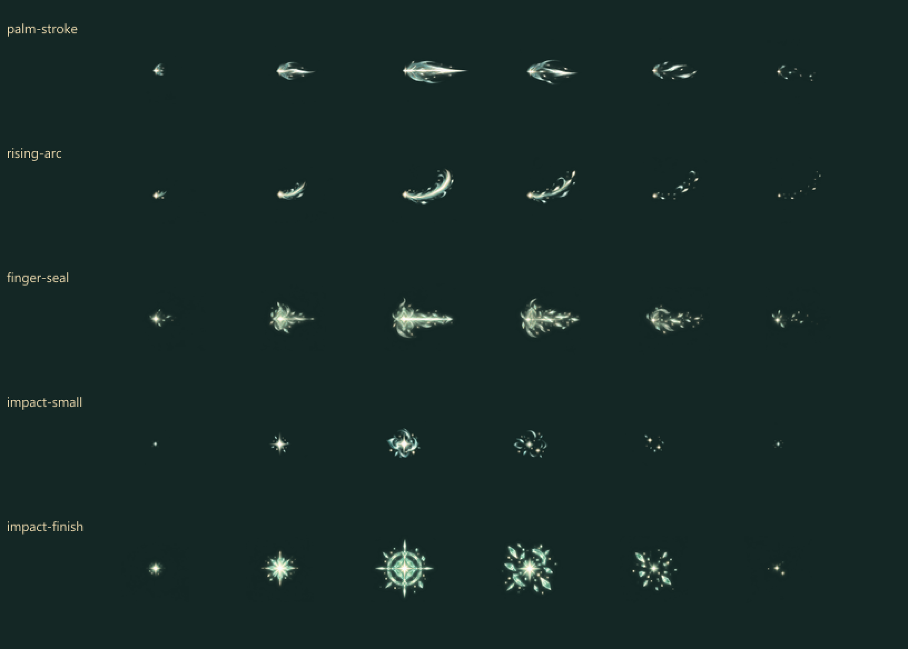
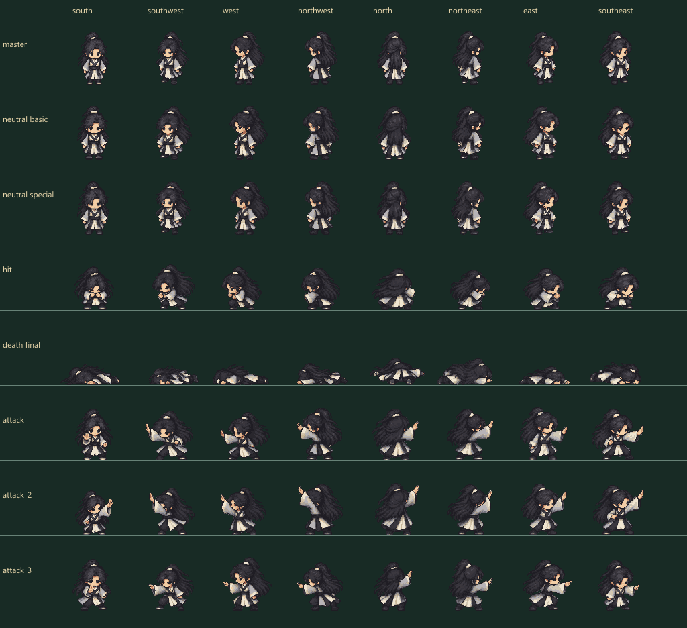
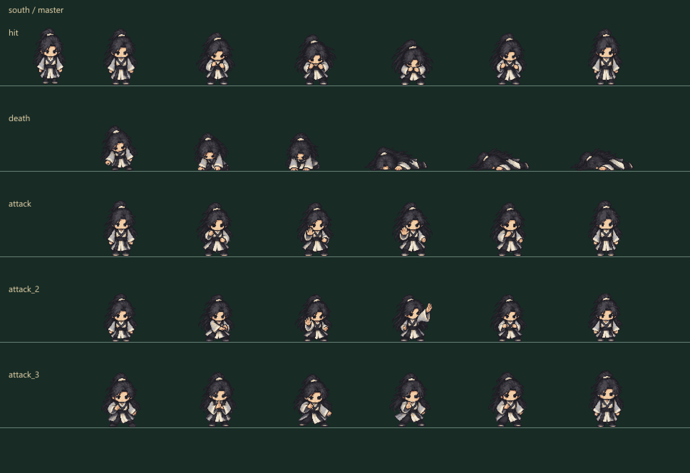

Master pixel đã chốt
Chuẩn tỷ lệ tĩnh.
VÂN HẢI ĐẠO ĐỒ · CORE COMBAT · KHÔNG WALK RIÊNG
Trúng đòn, gục và ba đòn combo mới, cạnh master đã chốt. Di chuyển thường / Shift dùng cùng clip chạy tám hướng.
240 pose combat mới / tám hướng, tổng80clip480pose. ART mới đang review; bộ40clip đã chốt giữ nguyên. Thêm ba vệt khí và hai mức va chạm ghép riêng.
Chuẩn tỷ lệ tĩnh.
Cùng điểm đất/cỡ người trong Three. Chọn Chạy rồi giữ Shift để so hai tốc độ với một clip; nhịp chân bám quãng đường, không đổi cỡ thân. Gục giữ pose cuối đến khi Phát lại. Combo nối ba đòn theo nhịp Core; bật/tắt Hiệu ứng kỹ năng hoặc chọn Đánh hụt để so sánh. Mục tiêu luyện trong review là minh họa ART.
Ba vệt phát lực và hai mức va chạm, 30 frame alpha riêng. Chung cho tám hướng; phát tại điểm tay đã đo, va chạm tại mục tiêu. Nguồn và quy trình.

Neutral nguồn mới khóa scale, năm action/sáu pose mỗi action. Chuyển hướng dưới đây giữ master và cùng world foot.


240 pose đã chốt giữ nguyên hash. Các nguồn combat có neutral khóa scale; mỗi hướng có body riêng. Khung gục160×96/pivot(80,88) chỉ thêm khoảng trống cho người ngã, không phóng/thu anatomy.
Raster tạo bằng ImageGen built-in, source/prompt/registration/hash lưu cùng gói. PixelLab/skeleton chưa tích hợp. Đây là ART review, chưa thay bộ trên sân server và chưa nghiệm thu đủ mọi action người chơi.